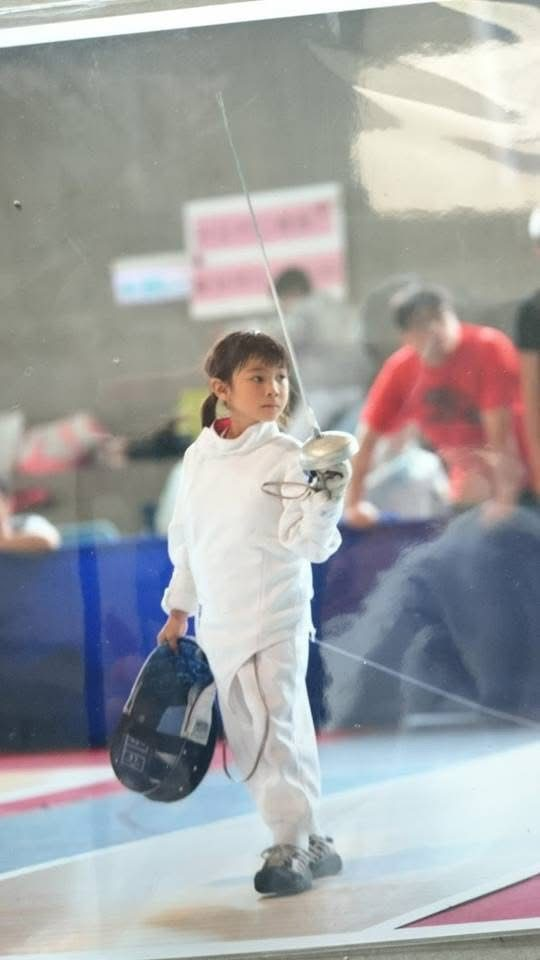
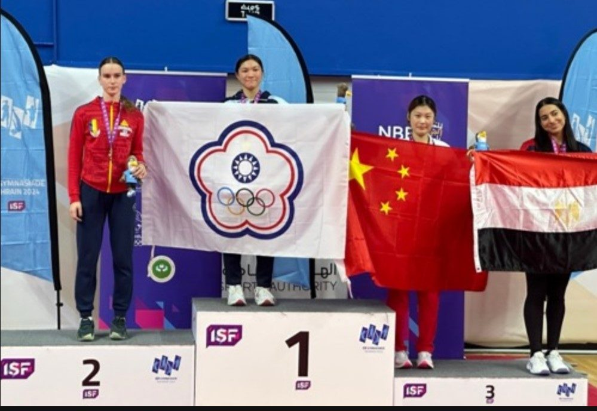

01我的故事
我是洪莉翔，目前就讀於國立台灣師範大學運動競技系。自小學一年級與「擊劍」結緣以來，這項運動已成為我生命不可或缺的一部分。
在國際銳劍賽場上，身高優勢往往是關鍵，雖然我在先天身材上不佔優勢，但我從不以此為藉口。相反地，我投入雙倍的汗水在訓練、策略佈局、戰術轉換及爆發力的強化。「用智慧補足身高，用體能超越限制」是我在國際賽場上與亞、歐、美強敵對抗的生存之道。
目前我正全力爭取國際積分以獲得奧運參賽資格為目標，但國際賽事的沉重負擔（如機票、交通、住宿與高額參賽費）已超出家庭經濟負荷。擊劍之路雖孤獨且無獎金報酬，但我對最高殿堂的熱忱未曾熄滅。

